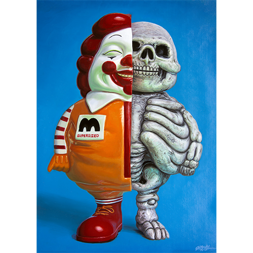
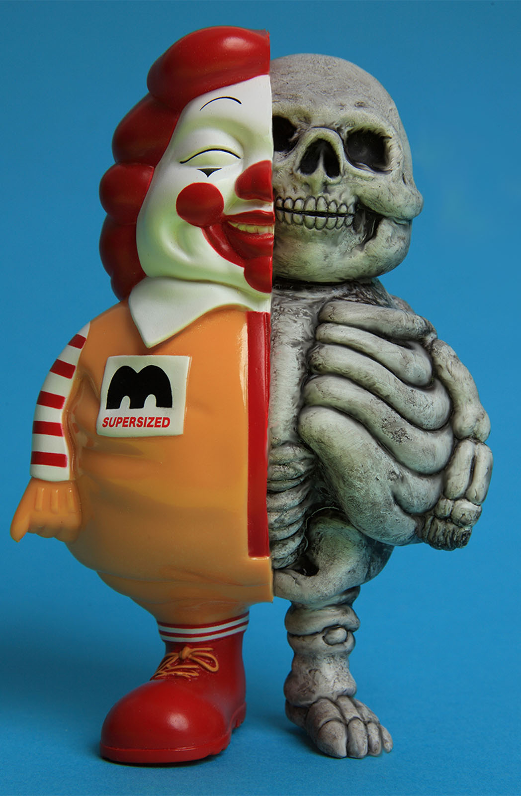

Exhibitions
NEO POP: Pop Surrealism vs Urban Art, Spazio Orlandi / Superground, Milan, Lombardy, Italy, March 15–23, 2012.
Literature
Ron English, Death and the Eternal Forever (Korero Press, 2014), p. 66. ISBN 978-0957664920.
Ron English, Status Factory: The Art of Ron English (San Francisco: Last Gasp of San Francisco, 2014), p. 163. ISBN 978-0867197891.
Notes
Ron English assembled and photographed a reference set as a model for this work.
This composition was later adapted by the artist as a limited-edition fine art print released through 1XRUN.
Ancillary Documentation

Selected Online Circulation
Selected examples of the work’s online circulation, reproduction, or discussion. This list is not exhaustive; it is intended to document representative appearances of the image beyond formal exhibition and publication records.